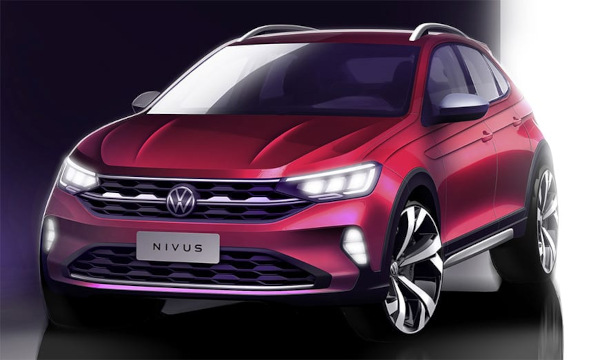

O Volkswagen Nivus é um SUV compacto produzido pela Volkswagen que se destaca pelo design moderno e esportivo. O modelo combina características de SUV com linhas de cupê, oferecendo uma aparência dinâmica e elegante. Ele conta com motor turbo 1.0 TSI, que pode gerar cerca de 128 cv de potência, aliado a um câmbio automático de seis marchas, proporcionando bom desempenho e eficiência no consumo de combustível. Além do visual marcante, o Nivus também se destaca pela tecnologia e conectividade. O carro possui painel digital, central multimídia com integração para smartphones e diversos sistemas de assistência ao motorista, como controle de cruzeiro adaptativo, alerta de ponto cego e assistente de permanência em faixa. De forma geral, o Nivus é um veículo voltado para quem busca conforto, tecnologia e estilo em um SUV compacto, sendo bastante popular no mercado brasileiro por unir design moderno, bom desempenho e recursos tecnológicos avançados.
Voltar